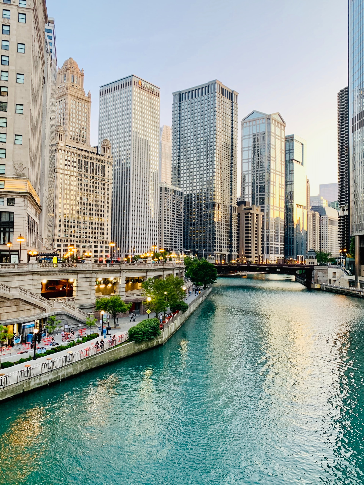
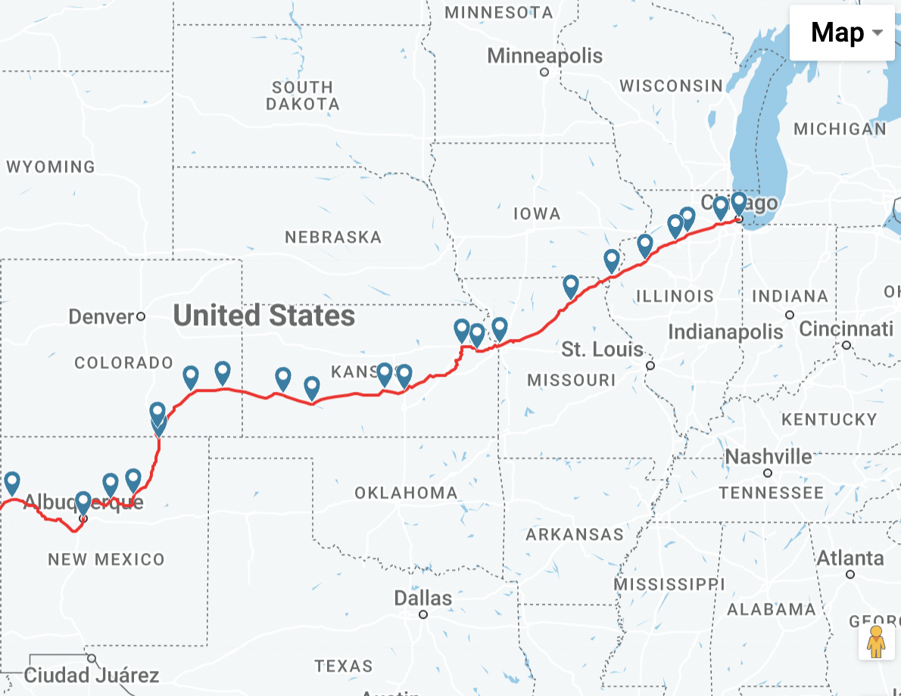
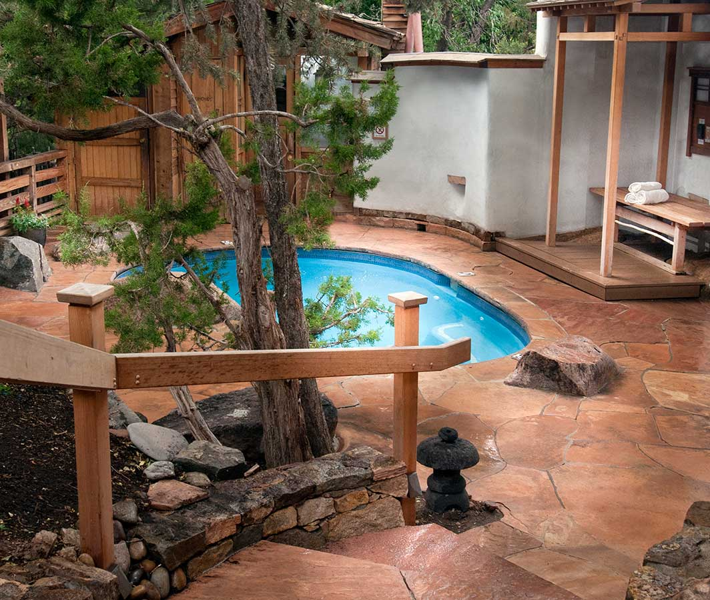
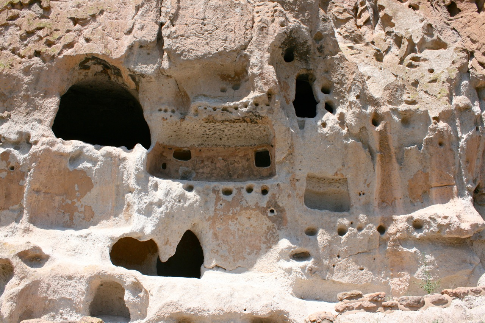

Our Trip
This summer, my family and I are planning to take a cross country trip from Pennsylvania to Santa Fe, NM. We
will first drive to Pittsburgh and stay the night, then on to Chicago and stay the night before bording an
overnight Amtrak train to Albuquerque. From there we will rent a car and drive about an hour northeast to
Santa Fe. We will stay in Santa Fe for six days and explore the surrounding natural beauty of the great
SouthWest. Our return trip will be a reversed, with the overnight train from Albuquerque to Chicago, another
overnight in the Windy City before heading to Pittsburgh and overnight before finally heading home. It will
be an adventure and we are looking forward to it!
Getting There
We will stop in three cities before reaching our final destination of Santa Fe.
Pittsburgh

We will stay for one night in Pittsburgh both going to and coming back from Santa Fe. We will stay in the
Three Rivers section of downtown, which is named that because it is where the Allegheny and the Monongahela
rivers
meet to form the third, the Ohio River. It is close to many museums, including the Carnegie Museums Carnegie Museums and the warhol.
View of downtown Pittsburgh from the Dusquene Incline
Photo by Yuhan Du on Unsplash
Chicago
We will drive from Pittsburgh to Chicago (a heafty 7-8 hours) and stay overnight in Chicago near Grant Park right on the shore of Lake Michigan. While I'm sure my kids would
love to catch a game at Wrigley Field,
I think we'll probably only have time for a walk through the park and a splash in the hotel pool before
moving on to the next leg of our
journey.

The Riverwalk in downtown Chicago
Photo by Aveedibya Dey on Unsplash
The Southwest Chief

Our cross-country train will depart from Chicago's beautiful Union Station. The Southwest Chief train line crosses 8 states over two days, ending in Los
Angeles. Our
trip ending in Albequerque, NM, will take just over 24 hours. We hope to be comfortable in our sleeping car
and enjoy white-tablecloth meals in the dining car. The glassed-in Sightseer Lounge promises spectacular
views of the mountains, deserts and canyons. Once we detrain in Albuquerque, we will get in our rental car
and drive to our final destination, Santa Fe.
The romance of the rails should not overshoadow the human lives expended to create it and the colonialism it
left in its wake. The first Transcontinental Railroad opened up in 1869 connecting existing train service on
the
East Coast to Council Bluffs, Iowa and then through to the West Coast. This innovation allowed white
settlers to move out west, displacing the Native People. The industry relied heavily on immigrant labor,
often working the men to death. Tickets in a first class car offered the lap of luxury for those who could
afford it, leaving second class passengers starving and in squalid conditions. It is important to recognize
how we've come to the privileges and freedoms we have today.
Amtrak route from Chicago to Albuquerque
Google Maps
Santa Fe, New Mexico
Horray! We've made it to Santa Fe. We've rented a charming Adobe-style cottage through AirBnB
on the east side of town for six days. We hope to explore the surrounding natural areas to do some hiking
and experience a landscape unlike anything we have on the East Coast.
Partial sightseeing list:

Ten Thousand Waves Spa
The Southwest region is known for its natural hot springs. After our long journey, we plan on
having a morning of rejuvenation at Ten Thousand Waves Spa, which is designed after Japanese mountain hot spring
resorts.

By Artotem from Here, There, and... - Bandelier Cliff Dwelling FeaturesUploaded by
PDTillman, CC BY 2.0, https://commons.wikimedia.org/w/index.php?curid=15594589
Bandelier National
Monument is a national park located in the Jemez Mountains that preserves the homes and territory
of the Ancestral Puebloans with structures dating from between 1150 and 1600 AD. We are excited to
explore the caves and reconstructed kivas (ancestral Pueblo homes) as well as see the rock paintings and
petroglyphs. Definitely not something we'd come across in Philly!
When we need a break from the intense desert sun, we'll pop into this strange-seeming art
museum that is on all the must-do lists of Santa Fe. Meow Wolf is an immersive art experience that should be like nothing we've seen
before!
However, this trip may not happen due to the wildfires that are currently raging in New Mexico. There are
two large fires currently burning on either side of Santa Fe that are the result of prescribed burns that
have gotten out of hand. Many of the parks and trails around the city are closed due to extreme wildfire
risk. June through August is considered the wet season in the Southwest, so there is hope that decent
precipitation will alleviate the fires, but given that the area is in a historic drought, much due to
climate change, I am not hopeful. This recent New York Times article paints a bleak picture.